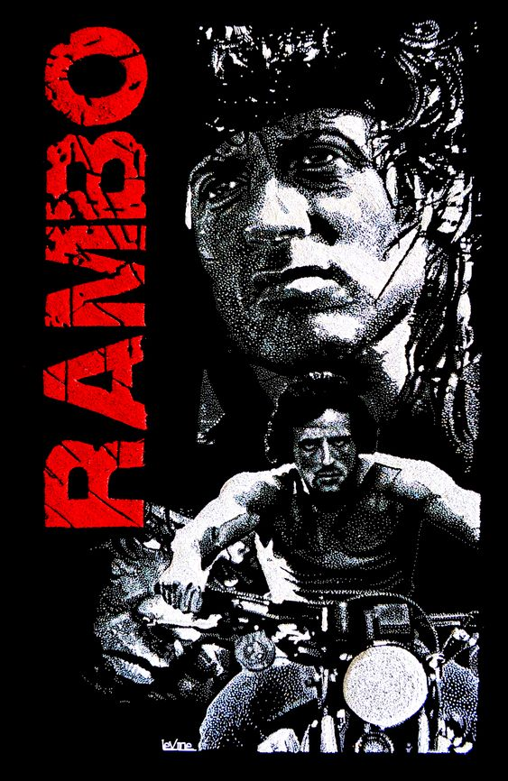

|  | Rambo: Programado Para Matar
Direção: Ted Kotcheff
Roteiro Ted Kotcheff, Sylvester Stallone
Elenco: Sylvester Stallone, Richard Crenna, Brian Dennehy
John Rambo, é um veterano de guerra do Vietnã, preso injustamente pelo xerife Will Teasle. Após muita tortura, consegue fugir e começa uma violenta vingança contra aqueles que o atormentaram. |
|
Acesse mais em YouTube SESSÕES
|